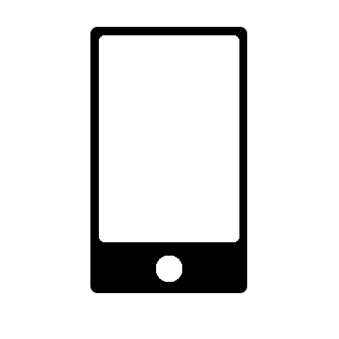
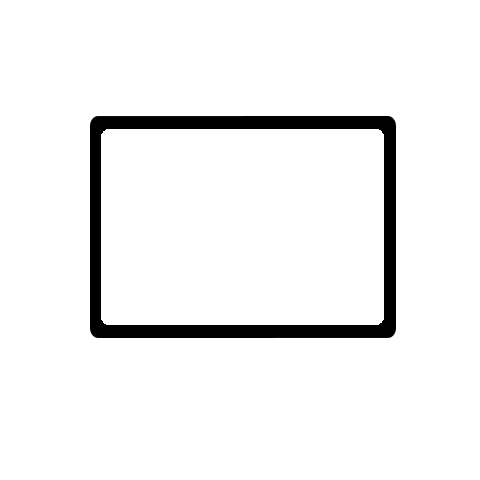

Phone

Tablet
Computer
Phone
Tablet
Computer
Central London holds many events. A Google search is all it takes. However, here are some events which takes place. A recent event was New Years Eve. A video of that night is shown below. Video was taken from BBC's Youtube channel. Link to the channel can be found underneath the video.
BBC - Check out BBC's YouTube video || This video is property of BBCShakespeare Globe is home to Shakepeare's style of poetry through theatre; where poems are acted out and plays are acted out as entertainment. Find some of the theatre acts on Shakespeareas Globe's website